一、Flex 布局
网页布局（layout）是 CSS 的一个重点应用：
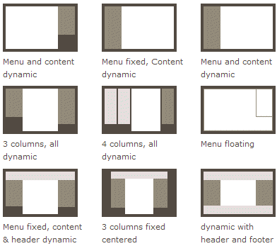
Flex 是 Flexible Box 的缩写，意为”弹性布局”，用来为盒状模型提供最大的灵活性。
它是2009年W3C提出的一种新布局方案，不同于传统的display+position+float+margin布局，Flex布局可以简便、完整、响应式地实现各种页面布局。
浏览器的支持情况：Chrome21+、Opera12.1+、Firefox22+、Safari6.1+、IE10+，这意味着现在可以很安全地使用这项功能。
下面就来归纳一下Flex布局的基本使用方法，如果对属性使用已经熟悉，也可以直接看最后的实例。
二、基本概念
采用 Flex 布局的元素，称为Flex 容器（flex container）。它的所有子元素自动成为容器成员，称为Flex 项目（flex item）。
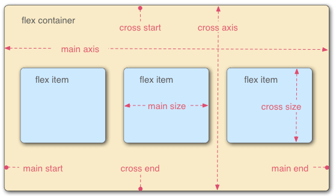
容器默认存在两根轴：水平的主轴（main axis）和垂直的交叉轴（cross axis）。主轴的开始位置（与边框的交叉点）叫做main start，结束位置叫做main end；交叉轴的开始位置叫做cross start，结束位置叫做cross end。
项目默认沿主轴排列。单个项目占据的主轴空间叫做main size，占据的交叉轴空间叫做cross size。
三、容器的属性
以下6个属性设置在容器上。
- flex-direction：row、row-reverse、column、column-reverse
- flex-wrap：nowrap、wrap、wrap-reverse
- flex-flow：row nowrap
- justify-content：flex-start、flex-end、center、space-between、space-around
- align-items：flex-start、flex-end、center、baseline、stretch
- align-content：flex-start、flex-end、center、space-between、space-around、stretch
(1) flex-direction属性
flex-direction属性决定主轴的方向（即项目的排列方向）。
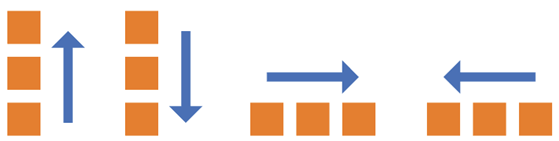
它可能有4个值。
- row（默认值）：主轴为水平方向，起点在左端。
- row-reverse：主轴为水平方向，起点在右端。
- column：主轴为垂直方向，起点在上沿。
- column-reverse：主轴为垂直方向，起点在下沿。
(2) flex-wrap属性
默认情况下，项目都排在一条线（又称”轴线”）上。flex-wrap属性定义，如果一条轴线排不下，如何换行。
它可能取三个值。
- nowrap（默认）：不换行。
- wrap：换行，第一行在上方。
- wrap-reverse：换行，第一行在下方。
(3) flex-flow
flex-flow属性是flex-direction属性和flex-wrap属性的简写形式，默认值为row nowrap。
(4) justify-content属性
justify-content属性定义了项目在主轴上的对齐方式。
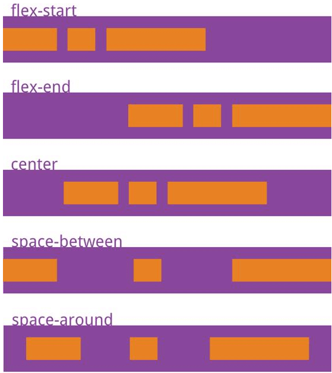
它可能取5个值，具体对齐方式与轴的方向有关。下面假设主轴为从左到右。
- flex-start（默认值）：左对齐
- flex-end：右对齐
- center： 居中
- space-between：两端对齐，项目之间的间隔都相等。
- space-around：每个项目两侧的间隔相等。所以，项目之间的间隔比项目与边框的间隔大一倍。
(5) align-items属性
align-items属性定义项目在交叉轴上如何对齐。
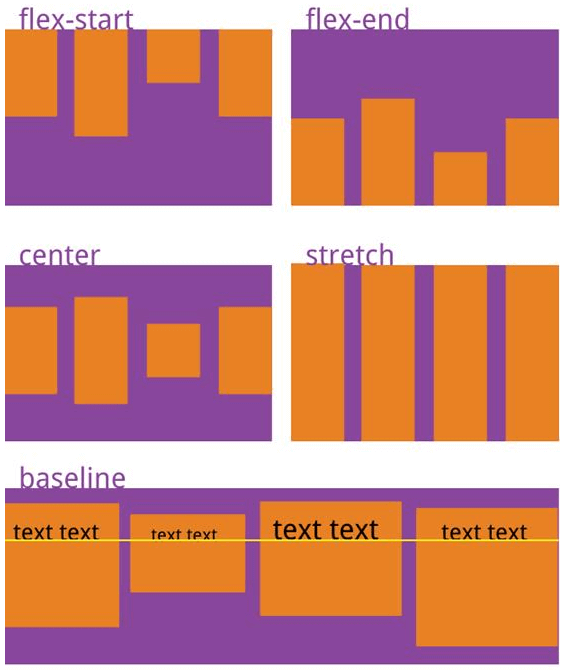
它可能取5个值。具体的对齐方式与交叉轴的方向有关，下面假设交叉轴从上到下。
- flex-start：交叉轴的起点对齐。
- flex-end：交叉轴的终点对齐。
- center：交叉轴的中点对齐。
- baseline ：项目的第一行文字的基线对齐。
- stretch（默认值）：如果项目未设置高度或设为auto，将占满整个容器的高度。
(6) align-content属性
align-content属性定义了多根轴线的对齐方式。如果项目只有一根轴线，该属性不起作用。
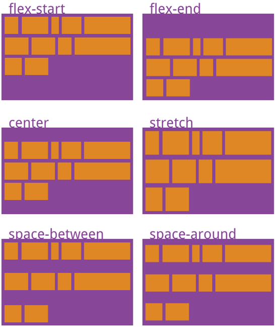
该属性可能取6个值。
- flex-start：与交叉轴的起点对齐。
- flex-end：与交叉轴的终点对齐。
- center：与交叉轴的中点对齐。
- space-between：与交叉轴两端对齐，轴线之间的间隔平均分布。
- space-around：每根轴线两侧的间隔都相等。所以，轴线之间的间隔比轴线与边框的间隔大一倍。
- stretch（默认值）：轴线占满整个交叉轴。
四、项目的属性
以下6个属性设置在项目上。
- order：整数（可负）
- flex-grow：整数（默认0）
- flex-shrink：整数（默认1）
- flex-basis：长度或auto（默认auto）
- flex：以上三个属性的组合（默认 0 1 auto）
- align-self：auto、flex-start、flex-end、center、baseline、stretch
(1) order属性
order属性定义项目的排列顺序。数值越小，排列越靠前，默认为0。
(2) flex-grow属性
flex-grow属性定义项目的放大比例，默认为0，即如果存在剩余空间，也不放大。
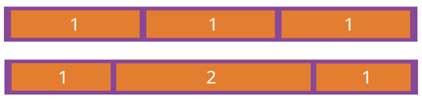
如果所有项目的flex-grow属性都为1，则它们将等分剩余空间（如果有的话）。如果一个项目的flex-grow属性为2，其他项目都为1，则前者占据的剩余空间将比其他项多一倍。
(3) flex-shrink属性
flex-shrink属性定义了项目的缩小比例，默认为1，即如果空间不足，该项目将缩小。
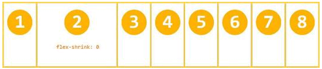
如果所有项目的flex-shrink属性都为1，当空间不足时，都将等比例缩小。如果一个项目的flex-shrink属性为0，其他项目都为1，则空间不足时，前者不缩小。负值对该属性无效。
(4) flex-basis属性
flex-basis属性定义了在分配多余空间之前，项目占据的主轴空间（main size）。浏览器根据这个属性，计算主轴是否有多余空间。它的默认值为auto，即项目的本来大小。
它可以设为跟width或height属性一样的值（比如350px），则项目将占据固定空间。
(5) flex属性
flex属性是flex-grow, flex-shrink 和 flex-basis的简写，默认值为0 1 auto。后两个属性可选。建议优先使用这个属性，而不是单独写三个分离的属性，因为浏览器会推算相关值。
flex属性的不同取值会影响到这三个值，具体如下：
| flex取值 | flex-grow | flex-shrink | flex-basis |
|---|---|---|---|
| auto | 1 | 1 | auto |
| none | 0 | 0 | auto |
| 非负数 | 非负数 | 1 | 0% |
| 两个非负数 | 非负数 | 非负数 | 0% |
| 长度/百分比 | 1 | 1 | 长度/百分比 |
| 非负数+长度/百分比 | 非负数 | 1 | 长度/百分比 |
(6) align-self属性
align-self属性允许单个项目有与其他项目不一样的对齐方式，可覆盖align-items属性。默认值为auto，表示继承父元素的align-items属性，如果没有父元素，则等同于stretch。该属性可取6个值，除了auto，其他都与align-items属性完全一致。
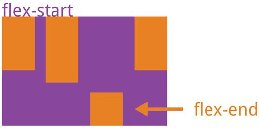
五、实例：骰子的布局
(1) 单项目
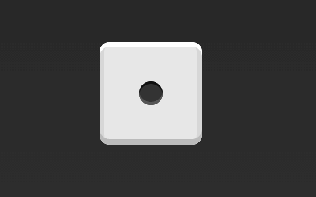
.box { |
(2) 双项目
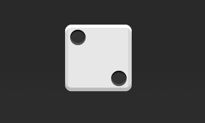
.box { |
(3) 三项目
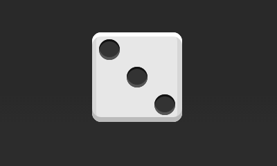
.box { |
(4) 四项目
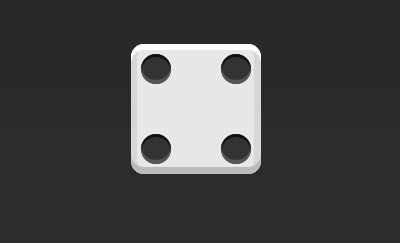
.box { |
(5) 六项目
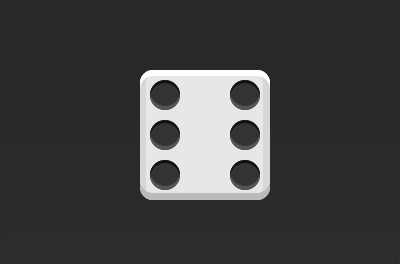
.box { |